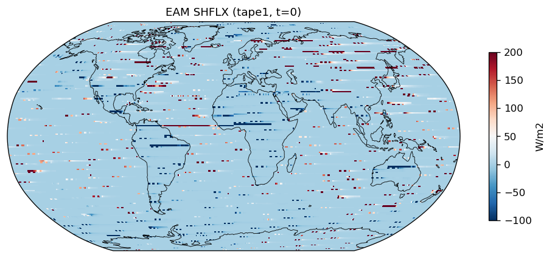

Remapped (lat-lon)
 mpaso_depth_temperatureCoarsened_0_remapped.png
mpaso_depth_temperatureCoarsened_0_remapped.png mpaso_depth_salinityCoarsened_0_remapped.png
mpaso_depth_salinityCoarsened_0_remapped.png mpaso_depth_profile_temperatureCoarsened_remapped.png
mpaso_depth_profile_temperatureCoarsened_remapped.png mpaso_depth_profile_salinityCoarsened_remapped.png
mpaso_depth_profile_salinityCoarsened_remapped.png227 issues in 8/9 components
| Component | Status | Issues |
|---|---|---|
| EAM | FAIL | 30 |
| MPAS-O Depth Coarsening (native) | FAIL | 6 |
| MPAS-O Depth Coarsening (remapped) | FAIL | 171 |
| MPAS-O Derived Fields (native) | FAIL | 2 |
| MPAS-O Derived Fields (remapped) | FAIL | 6 |
| MPAS-O Vertical Reduce (native) | PASS | 0 |
| MPAS-O Vertical Reduce (remapped) | FAIL | 3 |
| MPAS-SI Derived Fields (native) | FAIL | 2 |
| MPAS-SI Derived Fields (remapped) | FAIL | 7 |
| Component | Issue |
|---|---|
| EAM | tape1/PHIS: min=-1.422e+04 below -1000 |
| EAM | tape1/PHIS: max=7.674e+09 above 60000 |
| EAM | tape1/PS: min=0 below 40000 |
| EAM | tape1/PS: max=9.126e+10 above 110000 |
| EAM | tape1/TS: min=0 below 200 |
| EAM | tape1/TS: max=2.644e+08 above 340 |
| EAM | tape3/T_1: min=0 below 150 |
| EAM | tape3/T_1: max=1.662e+07 above 350 |
| EAM | tape3/T_2: min=0 below 150 |
| EAM | tape3/T_2: max=1.558e+07 above 350 |
| EAM | tape3/T_3: min=0 below 150 |
| EAM | tape3/T_3: max=1.559e+07 above 350 |
| EAM | tape3/T_4: min=0 below 150 |
| EAM | tape3/T_4: max=1.774e+07 above 350 |
| EAM | tape3/T_5: min=0 below 150 |
| EAM | tape3/T_5: max=1.769e+07 above 350 |
| EAM | tape3/T_6: min=0 below 150 |
| EAM | tape3/T_6: max=2.037e+07 above 350 |
| EAM | tape3/T_7: min=0 below 150 |
| EAM | tape3/T_7: max=7.41e+14 above 350 |
| EAM | tape3/T_8: min=0 below 150 |
| EAM | tape3/T_8: max=9.89e+14 above 350 |
| EAM | tape3/Q_1: max=0.1168 above 0.05 |
| EAM | tape3/Q_2: max=0.1414 above 0.05 |
| EAM | tape3/Q_3: max=2.354 above 0.05 |
| EAM | tape3/Q_4: max=66.9 above 0.05 |
| EAM | tape3/Q_5: max=134 above 0.05 |
| EAM | tape3/Q_6: max=278.2 above 0.05 |
| EAM | tape3/Q_7: max=7.41e+14 above 0.05 |
| EAM | tape3/Q_8: max=9.89e+14 above 0.05 |
| MPAS-O Depth Coarsening (native) | temperatureCoarsened: 465044 depth layers, expected 19 |
| MPAS-O Depth Coarsening (native) | salinityCoarsened: 465044 depth layers, expected 19 |
| MPAS-O Depth Coarsening (native) | salinityCoarsened: max=49.99 above 42 |
| MPAS-O Depth Coarsening (native) | velocityZonalCoarsened: 465044 depth layers, expected 19 |
| MPAS-O Depth Coarsening (native) | velocityMeridionalCoarsened: 465044 depth layers, expected 19 |
| MPAS-O Depth Coarsening (native) | layerThicknessCoarsened: 465044 depth layers, expected 19 |
| MPAS-O Depth Coarsening (remapped) | remapped/temperatureCoarsened_0: min=-9.542e+14 below -5 |
| MPAS-O Depth Coarsening (remapped) | remapped/temperatureCoarsened_0: max=9.659e+14 above 40 |
| MPAS-O Depth Coarsening (remapped) | remapped/temperatureCoarsened_1: min=-6.89e+14 below -5 |
| MPAS-O Depth Coarsening (remapped) | remapped/temperatureCoarsened_1: max=7.559e+14 above 40 |
| MPAS-O Depth Coarsening (remapped) | remapped/temperatureCoarsened_2: min=-9.595e+14 below -5 |
| MPAS-O Depth Coarsening (remapped) | remapped/temperatureCoarsened_2: max=7.481e+14 above 40 |
| MPAS-O Depth Coarsening (remapped) | remapped/temperatureCoarsened_3: min=-9.43e+14 below -5 |
| MPAS-O Depth Coarsening (remapped) | remapped/temperatureCoarsened_3: max=8.563e+14 above 40 |
| MPAS-O Depth Coarsening (remapped) | remapped/temperatureCoarsened_4: min=-9.509e+14 below -5 |
| MPAS-O Depth Coarsening (remapped) | remapped/temperatureCoarsened_4: max=9.957e+14 above 40 |
| MPAS-O Depth Coarsening (remapped) | remapped/temperatureCoarsened_5: min=-9.879e+14 below -5 |
| MPAS-O Depth Coarsening (remapped) | remapped/temperatureCoarsened_5: max=8.572e+14 above 40 |
| MPAS-O Depth Coarsening (remapped) | remapped/temperatureCoarsened_6: min=-9.307e+14 below -5 |
| MPAS-O Depth Coarsening (remapped) | remapped/temperatureCoarsened_6: max=9.861e+14 above 40 |
| MPAS-O Depth Coarsening (remapped) | remapped/temperatureCoarsened_7: min=-9.848e+14 below -5 |
| MPAS-O Depth Coarsening (remapped) | remapped/temperatureCoarsened_7: max=9.787e+14 above 40 |
| MPAS-O Depth Coarsening (remapped) | remapped/temperatureCoarsened_8: min=-9.044e+14 below -5 |
| MPAS-O Depth Coarsening (remapped) | remapped/temperatureCoarsened_8: max=8.436e+14 above 40 |
| MPAS-O Depth Coarsening (remapped) | remapped/temperatureCoarsened_9: min=-8.683e+14 below -5 |
| MPAS-O Depth Coarsening (remapped) | remapped/temperatureCoarsened_9: max=8.28e+14 above 40 |
| MPAS-O Depth Coarsening (remapped) | remapped/temperatureCoarsened_10: min=-8.815e+14 below -5 |
| MPAS-O Depth Coarsening (remapped) | remapped/temperatureCoarsened_10: max=9.161e+14 above 40 |
| MPAS-O Depth Coarsening (remapped) | remapped/temperatureCoarsened_11: min=-9.141e+14 below -5 |
| MPAS-O Depth Coarsening (remapped) | remapped/temperatureCoarsened_11: max=9.857e+14 above 40 |
| MPAS-O Depth Coarsening (remapped) | remapped/temperatureCoarsened_12: min=-9.506e+14 below -5 |
| MPAS-O Depth Coarsening (remapped) | remapped/temperatureCoarsened_12: max=9.542e+14 above 40 |
| MPAS-O Depth Coarsening (remapped) | remapped/temperatureCoarsened_13: min=-9.706e+14 below -5 |
| MPAS-O Depth Coarsening (remapped) | remapped/temperatureCoarsened_13: max=9.261e+14 above 40 |
| MPAS-O Depth Coarsening (remapped) | remapped/temperatureCoarsened_14: min=-9.097e+14 below -5 |
| MPAS-O Depth Coarsening (remapped) | remapped/temperatureCoarsened_14: max=9.288e+14 above 40 |
| MPAS-O Depth Coarsening (remapped) | remapped/temperatureCoarsened_15: min=-8.948e+14 below -5 |
| MPAS-O Depth Coarsening (remapped) | remapped/temperatureCoarsened_15: max=9.344e+14 above 40 |
| MPAS-O Depth Coarsening (remapped) | remapped/temperatureCoarsened_16: min=-7.909e+14 below -5 |
| MPAS-O Depth Coarsening (remapped) | remapped/temperatureCoarsened_16: max=8.79e+14 above 40 |
| MPAS-O Depth Coarsening (remapped) | remapped/temperatureCoarsened_17: min=-9.988e+14 below -5 |
| MPAS-O Depth Coarsening (remapped) | remapped/temperatureCoarsened_17: max=6.918e+14 above 40 |
| MPAS-O Depth Coarsening (remapped) | remapped/temperatureCoarsened_18: min=-2.136e+14 below -5 |
| MPAS-O Depth Coarsening (remapped) | remapped/temperatureCoarsened_18: max=2.774e+14 above 40 |
| MPAS-O Depth Coarsening (remapped) | remapped/salinityCoarsened_0: min=-9.964e+14 below 0 |
| MPAS-O Depth Coarsening (remapped) | remapped/salinityCoarsened_0: max=9.441e+14 above 42 |
| MPAS-O Depth Coarsening (remapped) | remapped/salinityCoarsened_1: min=-8.417e+14 below 0 |
| MPAS-O Depth Coarsening (remapped) | remapped/salinityCoarsened_1: max=9.472e+14 above 42 |
| MPAS-O Depth Coarsening (remapped) | remapped/salinityCoarsened_2: min=-8.763e+14 below 0 |
| MPAS-O Depth Coarsening (remapped) | remapped/salinityCoarsened_2: max=9.556e+14 above 42 |
| MPAS-O Depth Coarsening (remapped) | remapped/salinityCoarsened_3: min=-9.079e+14 below 0 |
| MPAS-O Depth Coarsening (remapped) | remapped/salinityCoarsened_3: max=9.616e+14 above 42 |
| MPAS-O Depth Coarsening (remapped) | remapped/salinityCoarsened_4: min=-8.395e+14 below 0 |
| MPAS-O Depth Coarsening (remapped) | remapped/salinityCoarsened_4: max=9.476e+14 above 42 |
| MPAS-O Depth Coarsening (remapped) | remapped/salinityCoarsened_5: min=-9.749e+14 below 0 |
| MPAS-O Depth Coarsening (remapped) | remapped/salinityCoarsened_5: max=9.733e+14 above 42 |
| MPAS-O Depth Coarsening (remapped) | remapped/salinityCoarsened_6: min=-9.177e+14 below 0 |
| MPAS-O Depth Coarsening (remapped) | remapped/salinityCoarsened_6: max=9.707e+14 above 42 |
| MPAS-O Depth Coarsening (remapped) | remapped/salinityCoarsened_7: min=-9.922e+14 below 0 |
| MPAS-O Depth Coarsening (remapped) | remapped/salinityCoarsened_7: max=9.166e+14 above 42 |
| MPAS-O Depth Coarsening (remapped) | remapped/salinityCoarsened_8: min=-9.447e+14 below 0 |
| MPAS-O Depth Coarsening (remapped) | remapped/salinityCoarsened_8: max=8.535e+14 above 42 |
| MPAS-O Depth Coarsening (remapped) | remapped/salinityCoarsened_9: min=-9.712e+14 below 0 |
| MPAS-O Depth Coarsening (remapped) | remapped/salinityCoarsened_9: max=6.292e+14 above 42 |
| MPAS-O Depth Coarsening (remapped) | remapped/salinityCoarsened_10: min=-8.419e+14 below 0 |
| MPAS-O Depth Coarsening (remapped) | remapped/salinityCoarsened_10: max=7.811e+14 above 42 |
| MPAS-O Depth Coarsening (remapped) | remapped/salinityCoarsened_11: min=-7.191e+14 below 0 |
| MPAS-O Depth Coarsening (remapped) | remapped/salinityCoarsened_11: max=8.922e+14 above 42 |
| MPAS-O Depth Coarsening (remapped) | remapped/salinityCoarsened_12: min=-9.875e+14 below 0 |
| MPAS-O Depth Coarsening (remapped) | remapped/salinityCoarsened_12: max=8.677e+14 above 42 |
| MPAS-O Depth Coarsening (remapped) | remapped/salinityCoarsened_13: min=-6.515e+14 below 0 |
| MPAS-O Depth Coarsening (remapped) | remapped/salinityCoarsened_13: max=9.958e+14 above 42 |
| MPAS-O Depth Coarsening (remapped) | remapped/salinityCoarsened_14: min=-7.347e+14 below 0 |
| MPAS-O Depth Coarsening (remapped) | remapped/salinityCoarsened_14: max=9.719e+14 above 42 |
| MPAS-O Depth Coarsening (remapped) | remapped/salinityCoarsened_15: min=-9.818e+14 below 0 |
| MPAS-O Depth Coarsening (remapped) | remapped/salinityCoarsened_15: max=7.696e+14 above 42 |
| MPAS-O Depth Coarsening (remapped) | remapped/salinityCoarsened_16: min=-8.711e+14 below 0 |
| MPAS-O Depth Coarsening (remapped) | remapped/salinityCoarsened_16: max=9.336e+14 above 42 |
| MPAS-O Depth Coarsening (remapped) | remapped/salinityCoarsened_17: min=-9.58e+14 below 0 |
| MPAS-O Depth Coarsening (remapped) | remapped/salinityCoarsened_17: max=9.704e+14 above 42 |
| MPAS-O Depth Coarsening (remapped) | remapped/salinityCoarsened_18: min=-4.897e+14 below 0 |
| MPAS-O Depth Coarsening (remapped) | remapped/salinityCoarsened_18: max=6.51e+14 above 42 |
| MPAS-O Depth Coarsening (remapped) | remapped/velocityZonalCoarsened_0: min=-8.107e+14 below -5 |
| MPAS-O Depth Coarsening (remapped) | remapped/velocityZonalCoarsened_0: max=9.227e+14 above 5 |
| MPAS-O Depth Coarsening (remapped) | remapped/velocityZonalCoarsened_1: min=-9.669e+14 below -5 |
| MPAS-O Depth Coarsening (remapped) | remapped/velocityZonalCoarsened_1: max=8.37e+14 above 5 |
| MPAS-O Depth Coarsening (remapped) | remapped/velocityZonalCoarsened_2: min=-9.891e+14 below -5 |
| MPAS-O Depth Coarsening (remapped) | remapped/velocityZonalCoarsened_2: max=9.566e+14 above 5 |
| MPAS-O Depth Coarsening (remapped) | remapped/velocityZonalCoarsened_3: min=-9.274e+14 below -5 |
| MPAS-O Depth Coarsening (remapped) | remapped/velocityZonalCoarsened_3: max=8.048e+14 above 5 |
| MPAS-O Depth Coarsening (remapped) | remapped/velocityZonalCoarsened_4: min=-9.346e+14 below -5 |
| MPAS-O Depth Coarsening (remapped) | remapped/velocityZonalCoarsened_4: max=7.928e+14 above 5 |
| MPAS-O Depth Coarsening (remapped) | remapped/velocityZonalCoarsened_5: min=-9.033e+14 below -5 |
| MPAS-O Depth Coarsening (remapped) | remapped/velocityZonalCoarsened_5: max=8.578e+14 above 5 |
| MPAS-O Depth Coarsening (remapped) | remapped/velocityZonalCoarsened_6: min=-8.879e+14 below -5 |
| MPAS-O Depth Coarsening (remapped) | remapped/velocityZonalCoarsened_6: max=9.978e+14 above 5 |
| MPAS-O Depth Coarsening (remapped) | remapped/velocityZonalCoarsened_7: min=-9.318e+14 below -5 |
| MPAS-O Depth Coarsening (remapped) | remapped/velocityZonalCoarsened_7: max=9.7e+14 above 5 |
| MPAS-O Depth Coarsening (remapped) | remapped/velocityZonalCoarsened_8: min=-9.702e+14 below -5 |
| MPAS-O Depth Coarsening (remapped) | remapped/velocityZonalCoarsened_8: max=9.42e+14 above 5 |
| MPAS-O Depth Coarsening (remapped) | remapped/velocityZonalCoarsened_9: min=-9.69e+14 below -5 |
| MPAS-O Depth Coarsening (remapped) | remapped/velocityZonalCoarsened_9: max=5.988e+14 above 5 |
| MPAS-O Depth Coarsening (remapped) | remapped/velocityZonalCoarsened_10: min=-9.543e+14 below -5 |
| MPAS-O Depth Coarsening (remapped) | remapped/velocityZonalCoarsened_10: max=5.42e+14 above 5 |
| MPAS-O Depth Coarsening (remapped) | remapped/velocityZonalCoarsened_11: min=-9.637e+14 below -5 |
| MPAS-O Depth Coarsening (remapped) | remapped/velocityZonalCoarsened_11: max=9.724e+14 above 5 |
| MPAS-O Depth Coarsening (remapped) | remapped/velocityZonalCoarsened_12: min=-9.501e+14 below -5 |
| MPAS-O Depth Coarsening (remapped) | remapped/velocityZonalCoarsened_12: max=9.017e+14 above 5 |
| MPAS-O Depth Coarsening (remapped) | remapped/velocityZonalCoarsened_13: min=-8.61e+14 below -5 |
| MPAS-O Depth Coarsening (remapped) | remapped/velocityZonalCoarsened_13: max=9.687e+14 above 5 |
| MPAS-O Depth Coarsening (remapped) | remapped/velocityZonalCoarsened_14: min=-7.13e+14 below -5 |
| MPAS-O Depth Coarsening (remapped) | remapped/velocityZonalCoarsened_14: max=9.24e+14 above 5 |
| MPAS-O Depth Coarsening (remapped) | remapped/velocityZonalCoarsened_15: min=-9.617e+14 below -5 |
| MPAS-O Depth Coarsening (remapped) | remapped/velocityZonalCoarsened_15: max=9.792e+14 above 5 |
| MPAS-O Depth Coarsening (remapped) | remapped/velocityZonalCoarsened_16: min=-9.819e+14 below -5 |
| MPAS-O Depth Coarsening (remapped) | remapped/velocityZonalCoarsened_16: max=9.616e+14 above 5 |
| MPAS-O Depth Coarsening (remapped) | remapped/velocityZonalCoarsened_17: min=-8.001e+14 below -5 |
| MPAS-O Depth Coarsening (remapped) | remapped/velocityZonalCoarsened_17: max=9.708e+14 above 5 |
| MPAS-O Depth Coarsening (remapped) | remapped/velocityZonalCoarsened_18: min=-8.642e+14 below -5 |
| MPAS-O Depth Coarsening (remapped) | remapped/velocityZonalCoarsened_18: max=7.572e+14 above 5 |
| MPAS-O Depth Coarsening (remapped) | remapped/velocityMeridionalCoarsened_0: min=-9.167e+14 below -5 |
| MPAS-O Depth Coarsening (remapped) | remapped/velocityMeridionalCoarsened_0: max=9.501e+14 above 5 |
| MPAS-O Depth Coarsening (remapped) | remapped/velocityMeridionalCoarsened_1: min=-9.226e+14 below -5 |
| MPAS-O Depth Coarsening (remapped) | remapped/velocityMeridionalCoarsened_1: max=8.959e+14 above 5 |
| MPAS-O Depth Coarsening (remapped) | remapped/velocityMeridionalCoarsened_2: min=-9.473e+14 below -5 |
| MPAS-O Depth Coarsening (remapped) | remapped/velocityMeridionalCoarsened_2: max=6.526e+14 above 5 |
| MPAS-O Depth Coarsening (remapped) | remapped/velocityMeridionalCoarsened_3: min=-8.88e+14 below -5 |
| MPAS-O Depth Coarsening (remapped) | remapped/velocityMeridionalCoarsened_3: max=8.982e+14 above 5 |
| MPAS-O Depth Coarsening (remapped) | remapped/velocityMeridionalCoarsened_4: min=-9.093e+14 below -5 |
| MPAS-O Depth Coarsening (remapped) | remapped/velocityMeridionalCoarsened_4: max=9.786e+14 above 5 |
| MPAS-O Depth Coarsening (remapped) | remapped/velocityMeridionalCoarsened_5: min=-8.88e+14 below -5 |
| MPAS-O Depth Coarsening (remapped) | remapped/velocityMeridionalCoarsened_5: max=7.927e+14 above 5 |
| MPAS-O Depth Coarsening (remapped) | remapped/velocityMeridionalCoarsened_6: min=-9.581e+14 below -5 |
| MPAS-O Depth Coarsening (remapped) | remapped/velocityMeridionalCoarsened_6: max=9.962e+14 above 5 |
| MPAS-O Depth Coarsening (remapped) | remapped/velocityMeridionalCoarsened_7: min=-9.528e+14 below -5 |
| MPAS-O Depth Coarsening (remapped) | remapped/velocityMeridionalCoarsened_7: max=9.418e+14 above 5 |
| MPAS-O Depth Coarsening (remapped) | remapped/velocityMeridionalCoarsened_8: min=-9.758e+14 below -5 |
| MPAS-O Depth Coarsening (remapped) | remapped/velocityMeridionalCoarsened_8: max=9.988e+14 above 5 |
| MPAS-O Depth Coarsening (remapped) | remapped/velocityMeridionalCoarsened_9: min=-8.733e+14 below -5 |
| MPAS-O Depth Coarsening (remapped) | remapped/velocityMeridionalCoarsened_9: max=9.549e+14 above 5 |
| MPAS-O Depth Coarsening (remapped) | remapped/velocityMeridionalCoarsened_10: min=-9.413e+14 below -5 |
| MPAS-O Depth Coarsening (remapped) | remapped/velocityMeridionalCoarsened_10: max=9.945e+14 above 5 |
| MPAS-O Depth Coarsening (remapped) | remapped/velocityMeridionalCoarsened_11: min=-6.801e+14 below -5 |
| MPAS-O Depth Coarsening (remapped) | remapped/velocityMeridionalCoarsened_11: max=9.835e+14 above 5 |
| MPAS-O Depth Coarsening (remapped) | remapped/velocityMeridionalCoarsened_12: min=-6.731e+14 below -5 |
| MPAS-O Depth Coarsening (remapped) | remapped/velocityMeridionalCoarsened_12: max=7.924e+14 above 5 |
| MPAS-O Depth Coarsening (remapped) | remapped/velocityMeridionalCoarsened_13: min=-8.923e+14 below -5 |
| MPAS-O Depth Coarsening (remapped) | remapped/velocityMeridionalCoarsened_13: max=8.506e+14 above 5 |
| MPAS-O Depth Coarsening (remapped) | remapped/velocityMeridionalCoarsened_14: min=-9.814e+14 below -5 |
| MPAS-O Depth Coarsening (remapped) | remapped/velocityMeridionalCoarsened_14: max=8.461e+14 above 5 |
| MPAS-O Depth Coarsening (remapped) | remapped/velocityMeridionalCoarsened_15: min=-7.852e+14 below -5 |
| MPAS-O Depth Coarsening (remapped) | remapped/velocityMeridionalCoarsened_15: max=8.154e+14 above 5 |
| MPAS-O Depth Coarsening (remapped) | remapped/velocityMeridionalCoarsened_16: min=-8.513e+14 below -5 |
| MPAS-O Depth Coarsening (remapped) | remapped/velocityMeridionalCoarsened_16: max=7.532e+14 above 5 |
| MPAS-O Depth Coarsening (remapped) | remapped/velocityMeridionalCoarsened_17: min=-7.569e+14 below -5 |
| MPAS-O Depth Coarsening (remapped) | remapped/velocityMeridionalCoarsened_17: max=8.466e+14 above 5 |
| MPAS-O Depth Coarsening (remapped) | remapped/velocityMeridionalCoarsened_18: min=-7.544e+14 below -5 |
| MPAS-O Depth Coarsening (remapped) | remapped/velocityMeridionalCoarsened_18: max=9.905e+14 above 5 |
| MPAS-O Depth Coarsening (remapped) | remapped/layerThicknessCoarsened_0: min=-7.382e+14 below 0 |
| MPAS-O Depth Coarsening (remapped) | remapped/layerThicknessCoarsened_1: min=-7.382e+14 below 0 |
| MPAS-O Depth Coarsening (remapped) | remapped/layerThicknessCoarsened_2: min=-7.382e+14 below 0 |
| MPAS-O Depth Coarsening (remapped) | remapped/layerThicknessCoarsened_3: min=-8.276e+14 below 0 |
| MPAS-O Depth Coarsening (remapped) | remapped/layerThicknessCoarsened_4: min=-6.248e+14 below 0 |
| MPAS-O Depth Coarsening (remapped) | remapped/layerThicknessCoarsened_5: min=-4.167e+14 below 0 |
| MPAS-O Depth Coarsening (remapped) | remapped/layerThicknessCoarsened_6: min=-9.665e+14 below 0 |
| MPAS-O Depth Coarsening (remapped) | remapped/layerThicknessCoarsened_7: min=-5.627e+14 below 0 |
| MPAS-O Depth Coarsening (remapped) | remapped/layerThicknessCoarsened_8: min=-8.392e+14 below 0 |
| MPAS-O Depth Coarsening (remapped) | remapped/layerThicknessCoarsened_9: min=-5.934e+14 below 0 |
| MPAS-O Depth Coarsening (remapped) | remapped/layerThicknessCoarsened_10: min=-4.167e+14 below 0 |
| MPAS-O Depth Coarsening (remapped) | remapped/layerThicknessCoarsened_11: min=-6.219e+14 below 0 |
| MPAS-O Depth Coarsening (remapped) | remapped/layerThicknessCoarsened_12: min=-4.167e+14 below 0 |
| MPAS-O Depth Coarsening (remapped) | remapped/layerThicknessCoarsened_13: min=-4.56e+14 below 0 |
| MPAS-O Depth Coarsening (remapped) | remapped/layerThicknessCoarsened_14: min=-6.919e+14 below 0 |
| MPAS-O Depth Coarsening (remapped) | remapped/layerThicknessCoarsened_15: min=-9.385e+14 below 0 |
| MPAS-O Depth Coarsening (remapped) | remapped/layerThicknessCoarsened_16: min=-6.943e+14 below 0 |
| MPAS-O Depth Coarsening (remapped) | remapped/layerThicknessCoarsened_17: min=-9.486e+14 below 0 |
| MPAS-O Depth Coarsening (remapped) | remapped/layerThicknessCoarsened_18: min=-9.033e+14 below 0 |
| MPAS-O Derived Fields (native) | surfaceHeatFluxTotal: min=-1784 below -1000 |
| MPAS-O Derived Fields (native) | surfaceHeatFluxTotal: max=1454 above 1000 |
| MPAS-O Derived Fields (remapped) | remapped/sst: min=-8.866e+14 below -5 |
| MPAS-O Derived Fields (remapped) | remapped/sst: max=7.728e+14 above 40 |
| MPAS-O Derived Fields (remapped) | remapped/sss: min=-8.201e+14 below 0 |
| MPAS-O Derived Fields (remapped) | remapped/sss: max=9.658e+14 above 42 |
| MPAS-O Derived Fields (remapped) | remapped/surfaceHeatFluxTotal: min=-8.714e+14 below -1000 |
| MPAS-O Derived Fields (remapped) | remapped/surfaceHeatFluxTotal: max=9.794e+14 above 1000 |
| MPAS-O Vertical Reduce (remapped) | remapped/freshwaterContent: min=-9.871e+14 below -1000 |
| MPAS-O Vertical Reduce (remapped) | remapped/freshwaterContent: max=8.34e+14 above 1000 |
| MPAS-O Vertical Reduce (remapped) | remapped/kineticEnergy: min=-9.427e+14 below 0 |
| MPAS-SI Derived Fields (native) | snowVolumeTotal: min=-3.434e-30 below 0 |
| MPAS-SI Derived Fields (native) | surfaceTemperatureMean: min=-41.44 below 180 |
| MPAS-SI Derived Fields (remapped) | remapped/iceAreaTotal: min=-7.313e+14 below 0 |
| MPAS-SI Derived Fields (remapped) | remapped/iceAreaTotal: max=5.665e+14 above 1 |
| MPAS-SI Derived Fields (remapped) | remapped/iceVolumeTotal: min=-9.547e+14 below 0 |
| MPAS-SI Derived Fields (remapped) | remapped/snowVolumeTotal: min=-6.823e+14 below 0 |
| MPAS-SI Derived Fields (remapped) | remapped/iceThicknessMean: min=-6.376e+14 below 0 |
| MPAS-SI Derived Fields (remapped) | remapped/surfaceTemperatureMean: min=-9.33e+14 below 180 |
| MPAS-SI Derived Fields (remapped) | remapped/surfaceTemperatureMean: max=9.065e+14 above 320 |
mpaso_depth_temperatureCoarsened_0_remapped.pngmpaso_depth_salinityCoarsened_0_remapped.pngmpaso_depth_profile_temperatureCoarsened_remapped.pngmpaso_depth_profile_salinityCoarsened_remapped.png mpaso_derived_sst_remapped.png
mpaso_derived_sst_remapped.png mpaso_derived_sss_remapped.png
mpaso_derived_sss_remapped.png mpaso_derived_surfaceHeatFluxTotal_remapped.png
mpaso_derived_surfaceHeatFluxTotal_remapped.png mpaso_vertreduce_oceanHeatContent_remapped.png
mpaso_vertreduce_oceanHeatContent_remapped.png mpaso_vertreduce_freshwaterContent_remapped.png
mpaso_vertreduce_freshwaterContent_remapped.png mpaso_vertreduce_kineticEnergy_remapped.png
mpaso_vertreduce_kineticEnergy_remapped.png mpassi_iceAreaTotal_native.png
mpassi_iceAreaTotal_native.png mpassi_iceVolumeTotal_native.png
mpassi_iceVolumeTotal_native.png mpassi_surfaceTemperatureMean_native.png
mpassi_surfaceTemperatureMean_native.png mpassi_iceAreaTotal_remapped.png
mpassi_iceAreaTotal_remapped.png mpassi_iceVolumeTotal_remapped.png
mpassi_iceVolumeTotal_remapped.png mpassi_surfaceTemperatureMean_remapped.png
mpassi_surfaceTemperatureMean_remapped.png mpassi_snowVolumeTotal_remapped.png
mpassi_snowVolumeTotal_remapped.png eam_tape1_TS.png
eam_tape1_TS.png eam_tape1_LHFLX.png
eam_tape1_LHFLX.png
eam_tape1_SHFLX.png eam_tape1_FLUT.png
eam_tape1_FLUT.png eam_tape1_PRECT.png
eam_tape1_PRECT.png eam_tape1_ICEFRAC.png
eam_tape1_ICEFRAC.png***** GLOBAL STATISTICS ( 512 MPI TASKS) ***** name on processes threads count walltotal wallmax (proc thrd ) wallmin (proc thrd ) "CPL:INIT" - 512 512 5.120000e+02 4.033451e+04 79.041 ( 17 0) 78.730 ( 144 0) "CPL:cime_pre_init1" - 512 512 5.120000e+02 9.828083e+02 2.182 ( 17 0) 1.872 ( 171 0) "CPL:mpi_init" - 512 512 5.120000e+02 7.601840e+02 1.747 ( 16 0) 1.436 ( 133 0) "CPL:ESMF_Initialize" - 512 512 5.120000e+02 6.800273e-01 0.003 ( 435 0) 0.000 ( 298 0) "CPL:cime_pre_init2" - 512 512 5.120000e+02 1.104550e+02 0.218 ( 73 0) 0.213 ( 204 0) "CPL:seq_infodata_init" - 512 512 5.120000e+02 1.703617e+01 0.070 ( 311 0) 0.006 ( 234 0) "CPL:seq_timemgr_clockInit" - 512 512 5.120000e+02 3.286543e+00 0.010 ( 457 0) 0.003 ( 305 0) "CPL:cime_init" - 512 512 5.120000e+02 3.924046e+04 76.644 ( 0 0) 76.640 ( 136 0) "CPL:init_comps" - 512 512 5.120000e+02 3.409786e+04 66.601 ( 88 0) 66.586 ( 511 0) "CPL:comp_init_pre_all" - 512 512 5.120000e+02 1.322076e-01 0.001 ( 15 0) 0.000 ( 157 0) "comp_init_cc_iac" - 512 512 5.120000e+02 1.883497e+00 0.006 ( 134 0) 0.003 ( 50 0) "z_i:comp_init" - 512 512 5.120000e+02 6.000143e-01 0.002 ( 2 0) 0.000 ( 53 0) "CPL:comp_init_cc_atm" - 512 512 5.120000e+02 1.701831e+04 33.239 ( 344 0) 33.239 ( 238 0) "a_i:comp_init" - 512 512 1.024000e+03 1.870705e+04 36.592 ( 381 0) 36.432 ( 132 0) "a_i:cam_init" - 512 512 5.120000e+02 1.691062e+04 33.030 ( 398 0) 33.027 ( 140 0) "a_i:cam_initfiles_open" - 512 512 5.120000e+02 7.797690e+01 0.154 ( 388 0) 0.151 ( 71 0) "a_i:cam_initial" - 512 512 5.120000e+02 4.276164e+03 8.353 ( 181 0) 8.351 ( 155 0) "a_i:dyn_init1" - 512 512 5.120000e+02 6.689914e+01 0.135 ( 322 0) 0.123 ( 454 0) "a_i:hycoef_init" - 512 512 5.120000e+02 1.278931e+01 0.029 ( 160 0) 0.021 ( 262 0) "a_i:prim_init1" - 512 512 5.120000e+02 4.254299e+01 0.089 ( 257 0) 0.077 ( 453 0) "a_i:repro_sum_finalsum" - 512 512 4.505600e+04 1.624128e-02 0.000 ( 382 0) 0.000 ( 494 0) "a_i:compose_init" - 512 512 5.120000e+02 9.391599e+00 0.021 ( 267 0) 0.015 ( 453 0) "a_i:sl_init1" - 512 512 5.120000e+02 2.571761e+00 0.009 ( 177 0) 0.001 ( 460 0) "a_i:phys_grid_init" - 512 512 5.120000e+02 1.297782e+01 0.034 ( 454 0) 0.020 ( 262 0) "a_i:initial_conds" - 512 512 5.120000e+02 4.158406e+03 8.136 ( 43 0) 8.111 ( 402 0) "a_i:PIO:initdecomp" - 512 512 3.072000e+03 2.380417e+01 0.049 ( 87 0) 0.045 ( 299 0) "a_i:PIO:PIOc_initdecomp" - 512 512 3.072000e+03 2.372344e+01 0.049 ( 87 0) 0.045 ( 299 0) "a_i:dyn_init2" - 512 512 5.120000e+02 3.131222e+01 0.070 ( 402 0) 0.052 ( 155 0)
{kind=link}